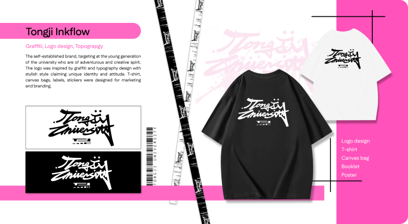
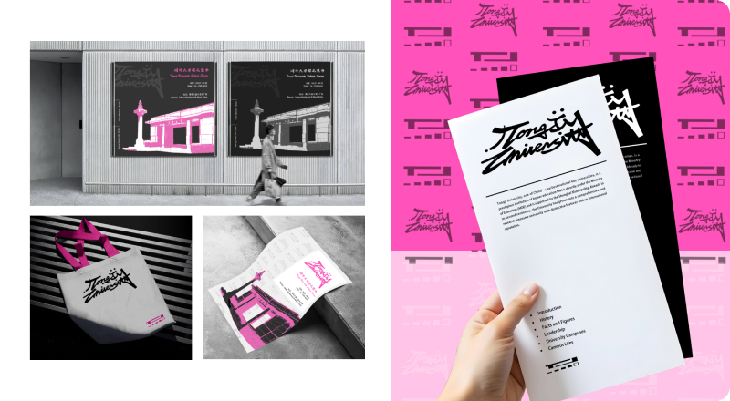

Graffi-TJ
2013
Graphic Design
Duration: 6 weeks Role: Architect Members: solo work The original series, targeting at the young generation of the university who are of adventurous and creative spirit. The logo was inspired by graffiti and typography design with stylish style claiming unique identity and attitude. T-shirt, canvas bags, labels, stickers were designed for marketing and branding.
